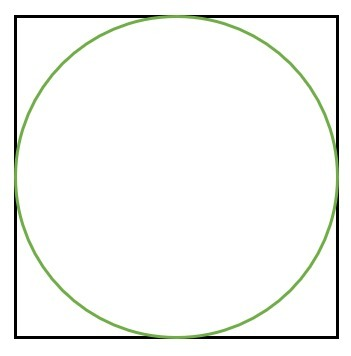
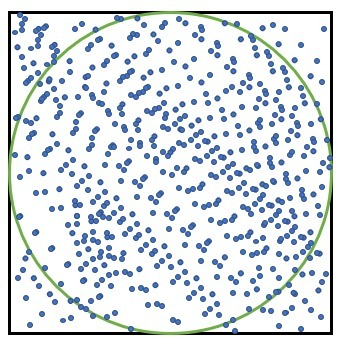
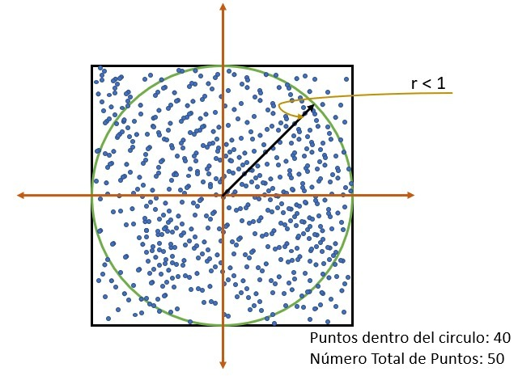
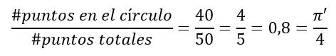
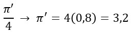

A. Dibuja un círculo unitario, y al cuadrado de lado 2 que lo inscribe.

B. Lanza un número n de puntos aleatorios uniformes dentro del cuadrado.

C. Cuenta el número de puntos dentro del círculo, i.e. puntos cuya distancia al origen es menor que 1.

D. El cociente de los puntos dentro del círculo dividido entre n es un estimado de π/4.

E. Multiplica el resultado por 4 para estimar π.
